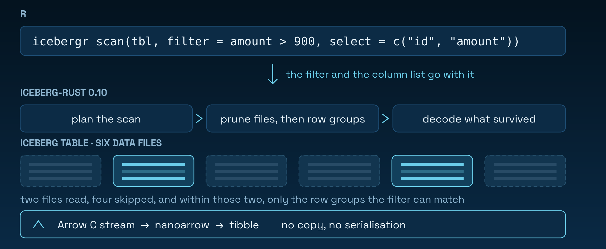

Apache Iceberg tables, read and written from R. No DuckDB in the middle, no CSV export — R was the last major data language without an Iceberg client.
install.packages("icebergr")
pak::pak("PursuitOfDataScience/icebergr") # development versionRead
library(icebergr)
tbl <- icebergr_example_table()
icebergr_collect(
icebergr_scan(tbl, filter = amount > 900, select = c("id", "amount"))
)
Worth checking rather than assuming: icebergr_scan_plan() lists the surviving files before a byte is read.
nrow(icebergr_scan_plan(icebergr_scan(tbl))) #> 2
nrow(icebergr_scan_plan(icebergr_scan(tbl, filter = id > 1000))) #> 1Time travel
h <- icebergr_snapshots(tbl) # snapshot_id, operation, ...
icebergr_collect(icebergr_scan(tbl, snapshot_id = h$snapshot_id[[1]]))
icebergr_collect(icebergr_scan(tbl, as_of = h$timestamp[[1]]))as_of resolves against Iceberg’s snapshot log, so a snapshot a rollback abandoned is not selected.
Write
icebergr_append(tbl, data.frame(id = 9001L, event = "purchase", amount = 42.5))Catalogs
Credentials come from the environment, never from arguments.
Sys.setenv(ICEBERGR_REST_TOKEN = "...")
catalog <- icebergr_catalog("rest", uri = "https://catalog.example.com")
tbl <- icebergr_table(catalog, "analytics.events")vignette("catalog-configuration") covers REST, Glue and S3.
What works
Table spec v1 and v2, on iceberg-rust 0.10.0. icebergr_spec_support() reports the matrix below for your own build.
| ✅ works | not available | |
|---|---|---|
| Read | predicate, projection and row-group pushdown · merge-on-read positional and equality deletes · nested struct / list / map · icebergr_scan_plan()
|
🦀 limit pushdown · 🦀 pushdown onto a nested field |
| Time travel | snapshot history · read by snapshot id or timestamp · read the schema, filter and select as of a snapshot | |
| Write | append to an unpartitioned table · create a table or namespace · register an existing table · v1 tables stay v1 | 🚧 append to a partitioned table · 🦀 row-level deletes, MERGE, overwrite |
| Catalogs | REST · in-process memory · ⚙️ AWS Glue · ⚙️ S3 |
🦀 Hadoop / filesystem — use memory
|
| Metadata | schema · partition spec · properties · icebergr_reload() for another session’s commits |
🚧 setting properties |
⚙️ needs a Cargo feature at build time · 🦀 missing upstream in iceberg-rust · 🚧 out of scope for this release, along with schema and partition evolution, snapshot expiry, dbplyr verbs and encryption
A correct narrow surface beats a broad buggy one: everything above raises an informative error rather than failing obscurely.
Types
integer, double, character, logical, Date, POSIXct, struct (a data frame column) and list (a vctrs::list_of) all round-trip unchanged. The exceptions:
NaN |
comes back NA. R’s is.na(NaN) is TRUE, so it is written as a null |
factor |
comes back character. Iceberg has no dictionary type |
long |
needs bit64 installed, or Arrow’s int64 narrows to a double
|
timestamp_ns |
a POSIXct is a double of seconds, so sub-microsecond precision is lost |
| snapshot ids |
character, not numeric — they are random 64-bit integers and a double holds 53 bits |
Building from source
A CRAN binary needs no Rust toolchain. Compiling from source does: rustc >= 1.92, and a few minutes for 264 crates. The default build is fully vendored and never touches the network; the two optional backends fetch from crates.io.
FEASIBILITY.md has the vendoring and MSRV analysis behind those numbers.
Licence
GPL (>= 3). Bundled Rust crates keep their own licences, listed in inst/NOTICE and LICENSE.note.
Apache, Apache Iceberg and Iceberg are trademarks of The Apache Software Foundation. icebergr is an independent community package, not affiliated with or endorsed by the ASF, and is not one of the official Iceberg clients. The logo is original artwork and does not use or imitate any Apache mark.